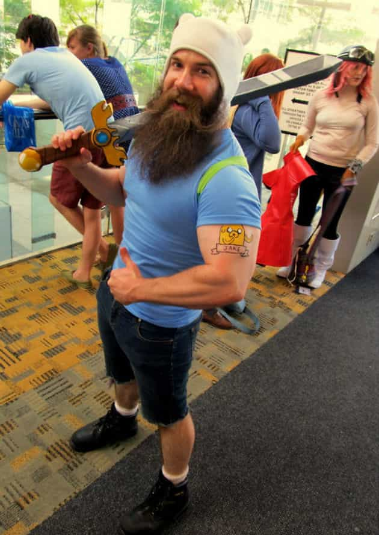

< < < Back
Women Are Allowed To Find Soulmates While Men Must Settle – Return Of Kings
For the last month or so, I’ve been running a bit of an experiment, with the purpose of putting together an article about the Millennial dating scene. I’m not sure if I will ever bother writing it or not. For one: it’s very depressing. Two: it might be a little skewed. I’m not the best looking dude, but that’s mitigated by how much I work out, and my fairly good grasp of the female mindset. I wanted to present the article as what a typical young guy of today has to go through when attempting to be romantic with his female peers, and I do not think I can do that since the typical Millennial man seems to be a downtrodden simp who’s infinitely grateful when a woman who isn’t an absolute troll deigns to talk to him and I…well, I act quite differently than that.
Part of this poorly executed experiment is going on dates with a variety of women: ones I ask on the street, at bars and nightclubs, online and through hook up apps like Tinder. I haven’t dated a girl since high school (there’s no point since I can usually get the best part of the relationship, sex, with absolutely minimal investment), so I have no first hand experience of the extreme bullshit most twenty-something men have to deal with just to reach the middle of the needs pyramid (that was a poorly implemented Maslow reference, by the way). I want to see the common tics and behaviors Millennial women display while dating and hopefully give some of the younger ROK readers an idea of what warning signs they should look out for when entering the minefield that is a modern relationship.
Here’s an example of what I’m researching: During the first and subsequent dates, I keep track of how long it takes my date to pull her cell phone out once the date has started, and how often she checks it during. Quickest draw: 9 seconds [we said hi, sat down, her cellphone was out]. The longest any chick lasted before pulling it out was roughly 7 minutes. Record amount of checks [that I noticed]: 49 times over an hour period. Least amount of checks: 10 over an hour period.)
Anyhoo, one of my most recent dates was with a university gal just going into her second year whom I’ll just call Gina. Gina is nineteen, with long blonde hair (which she dyed stupidly with a strip of blue and green on one side), a visible neck and wrist tattoo, a stud in her nose (though the occasional ring makes it’s appearance), and on the ten scale is about a 6.5. I met her on Tinder, and judging by her pics I more or less expected her to show up to our first date (coffee house, which I intentionally chose since it’s the most common and boring first date idea I can think of) dressed like a slutty mess.
Surprisingly enough she showed up looking like a human being, wearing a dress with a knee length skirt and a jacket over the top. She even left her nose stud at home (but not her cell phone: it was out within 3 minutes and was checked 16 times during the date. The fact that I know that really makes me feel like Patrick Bateman).
The first fifteen minutes were as dreary and boring as could be. I was intentionally acting as much as a Beta male cliché as I could without crossing the line into being a full blown parody, and her interest was visibly waning by the time our drinks arrived. On one of her many bored scans away from me and around the coffee shop, Gina smirked and said, “Look at those two.”
I looked to where she was nodding. Across the store, at another table, a gay couple were kissing. The one closest to us was brown haired and dressed bizarrely, wearing some kind of dress shirt and a pair of suspenders.
At this point I need to explain that I am a closet nerd. And I don’t mean that I know the difference between Star Trek and Star Wars. I mean I am a Nerd. Not only is Trek the better Star franchise, but I’ve watched all the Star Trek series and have ranked them from best to worst: DS9 [season 7 sucked], TNG [Season 3 and beyond], TOS, Voyager blows and Enterprise never happened. I have watched anime films and can coherently describe the plots of Ghost in the Shell, Akira, Jin-Roh: The Iron Wolf Brigade and even less mainstream anime films such as Royal Space Force: The Wings Of The Honneamise and Venus Wars. Many of you reading just had your eyes glaze over, and now you understand why I am a closet nerd.
Anyways, one such nerd show I like to watch is Torchwood, a spin off of the famous British Sci-Fi show Doctor Who. The lead character in the show is Captain Jack Harkness (played by John Barrowman of Shark Attack 3: Megalodon fame), a bisexual from the future who fights aliens. The gay guy at the other table also just happened to be dressed similarly to Harkness’s signature style.

“Yeah, look at Captain Harkness go,” I muttered more than said.
Gina’s eyes seemed to actually light up at that comment, and the bored look on her face was gone instantly. “Was that a Torchwood reference?” she asked eagerly.
I was stunned that this above average looking girl knew what show I was referencing. Not needing to act Beta, I more or less stuttered out: “You watch Torchwood?”
Practically giddy now, Gina went on about her love for the show for the next few minutes. The conversation moved onto other shamefully nerdy passions of ours (Gina, unlike myself, is a gamer), what nerd shows we watch (a surprising amount, including the various Star Treks and a few of the animes I mentioned above). We have both played Dungeons and Dragons before.
In short, Gina and I discovered we had a lot of shared interests. As a teenager, I would have been in love right then and there: the only serious girlfriend I’ve ever had I dated because during a high school party (she was a Freshman, I was a Junior) she got really drunk and started calling me Dean Winchester all night (due to my ridiculous teenage fashion sense of wearing boots everywhere and my cousin’s ratty old military jacket), a reference to the television show Supernatural (which I am also a fan of). The next time I talked to her sober we found out we liked a lot of the same stuff, and we dated until I graduated and left town.

But I’m an adult now, one with knowledge of the cold harsh truths of the world and the women that inhabit it. And the fact is that Gina is nineteen, well into the female lust phase (18-28) with one year of university residence living already under her belt. Being an educated idiot myself, I have seen—and freely dabbled in—the slut training academy that is college, so I know exactly what sort of environment Gina lives in. Plus the idiotic tattoos and nose piercing are universally recognizable signs of sluttery (for those curious, the neck tat was a rainbow swirl and the wrist were stars, so tres unique).
We met on Tinder, which is self explanatory. And although she has a great body at the moment, Gina admitted during our second date that she doesn’t work out (but she reassured me that she’s totally going to get into it when school starts up), so this will undoubtedly be the year of the Freshman fifteen. Oh, and we had sex within 72 hours of our first meeting, sooo yeah, there’s that too.
Even though we shared numerous interests, if I chose to date Gina I would be dating a girl who has: marred her body with ugly and faddish mutilations, has likely slept with numerous men before me (she wasn’t a virgin and Tinder sure ain’t no Chaste Christian Singles app), and will likely be getting fatter sooner rather than later. I asked her if she’s working, even part time, and Gina said no, so she’s already dug into a pile of debt. Plus she’s nineteen, and out of the hundreds of young woman I’ve met, I know of ten total who stayed, or currently still are, with the same man they met at that age. Heartless mathematical odds are in favor that any investment of time, money and love I make in her would be repaid by Gina with cuckoldry and crazy-bitching, as is the wont of the modern woman.
And who would she be dating? I generally try to be humble about myself, but if we dated Gina would get a twenty-three year old man who: has a university degree from a fairly prestigious school (although it’s an English major, not that impressive); is debt free and owns his own vehicle (and I have enough savings that I could almost outright buy a house); who has electrician’s certifications and will possibly be making six figures within the decade (or this year, if I opted to go to the oil sands); who shares a good amount of her interests; who busts his hump at the gym several nights a week to look good physically; who believes in monogamy in relationships (I may participate in the hook up culture but if I was dating I wouldn’t stray); and who has a family that isn’t a dysfunctional mess. I even have some sisters that she could bond with.

Am I perfect man? No, but compared to a lot of true Trekkies and other nerds I am a phenomenal human being. Gina is above average in looks and only exceptional in personality to me simply because she knows who Finn The Human is. I am likely amongst the top tier of genuinely nerdy men since it’s not unfair to say that the average guy with in-depth knowledge about the Federation’s war with the Dominion is likely to be out of shape, socially awkward, and poorly employed.
If I locked her down, Gina would be getting one of the best men possible who also shares her a good chunk of her interests and passions: she’d be getting the closest thing to a real soulmate there is. I would be getting a mediocre woman who would stop laughing at my Doctor McCoy impressions once the first baby came along.
And that dynamic plays out in many relationships, because a woman who is genuinely interested in something other than her mirror are comparative rarities. How many men out there have lowered their standards to date a woman simply because she shared some of his hobbies or interests, while that woman gets an absolute prize of man? I know of many.
Next spring a buddy of mine is getting married to a woman he dated because she loves going hunting; he makes six figures a year and almost got a four plate deadlift the last time we worked out together. She has a belly and when not hunting religiously she reads Cosmo and watches reality TV all day (she doesn’t work). My roommate is a good looking gamer guy who often works out with me (making good progress with his Squat, Bench and Dead, having seriously started lifting around four months ago) and is dating a short haired chubster simply because she is a genuine gamer gal.
I’ve seen men become enthralled when a woman they’re talking to not only says she likes punk music but can actually name bands beyond Blink 182; I don’t know if they’re still together today, but an old room mate of mine who was quite a womanizer dropped out of the university pump-and-dump game because he started to date a chick who was really into the Rockabilly scene like he was. He voluntarily gave up sleeping with in-their-prime women because he met a girl who liked The Cramps and wore polka dot dresses.
When it comes to rivalry between the sexes, many double standards are often brought up. The most common one is the “a woman who sleeps around is a slut but a man who does the same is not,” but the most painful double standard is exactly the one I’ve been ranting about: the Soulmate double standard. So long as she doesn’t foul it up by completely screwing away her twenties, most women have the option to find a man who will truly love her, share her interests and sacrifice everything he could and ever will be to give her a comfortable life because he truly believes she is his soul mate.
Even young women whose interests lie solely in themselves can still find men who will worship them, but a woman who is into Hot Rod cars and Tae Kwon Do and Radiohead has an almost infinitely better chance of finding a good man who shares her soul than if the sexes were reversed: and that man will love her with a fiery passion simply because of those shared passions.
Most men have to lower their standards in order to find a woman who has even a passing interest in what he is into, and far too many men must completely surrender their souls by dating and marrying women with whom they have nothing in common, who often simply tolerate a man’s passion. Men are the interesting sex, while by and large women like sitting on the couch reading about and watching all the other women they wish they were.
I won’t link it out of respect for the guy, but I recently watched a video where a fitness enthusiast was making cookies to help people get gains—and this guy is a shredded beast who knows what he’s talking about—and at one point in the video his out of shape, average looking wife comes in and gives the guy a shoulder so cold I’m surprised their breath didn’t start showing in the air. She was angry because he was participating in his passion, one which she clearly does not share.
Then, at the other end of the spectrum, in his autobiography “On Writing,” Stephen King freely admits that if his wife had told him that his writing (before he made it big) was a waste of time, he would have lost heart and quite likely quit, probably winding up a drunken old teacher as opposed to a billionaire best-seller. Instead his wife, also a writer, encouraged him because she shared in his interests. That’s how extreme a difference the love of a woman who shares a man’s passion can influence his life.
It’s too bad so few men will get the chance to find soulmates. Double standards aren’t just for men.
Read More: 5 Dating Conventions That Women Killed


{kind=link}